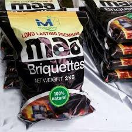

In the collection of the raw material, Maa briquettes offers employment
opportunities to casual labourers as well. They are adaptable for both households and business
use such as in hotels and restaurants. Besides this,they are energy-efficient, and can reduce pressure
on forests and urban pollution levels as they offer a practical solution to supplement wood as fuel. Remember, these little briquettes can make a big impact!
Raw Materials
Maa Briquette uses waste materials like char-dust, saw-dust, maize stalks and vegetable matter from Narok market to create their briquettes.
.jpg)
Advantages of MAA Briquettes
- Smoke-free:Maa briquettes is of quality as compared to traditional charcoal.
- Burning Time:They burn 3hours+ longer than regular charcoal.
- Versatility:Suitable for both households and businesses (e.g., hotels, restaurants).
- Cost-Effective:On average, Maa briquettes cost less than charcoal.
- Compatible with various cookstoves, barbeque grills, wammers and kuni-boosters.

NETFUND Support
Maa Briquette received support from the NETFUND Incubation program, including business incorporation assistance and seed funding for machinery installation.

Our Product
Explore our range of smokeless, long-burning briquettes:
- Classic Charcoal: Ideal for barbecues and outdoor grilling, long burning sessions and low-heat cooking and burns evenly.
- Eco-Fire Logs: Perfect for indoor fireplaces and stoves, they are smokeless and convenient and provides extended warmth with minimal tending.
Our Team
Maa briquette, a sustainable energy company, embodies core values that drive their mission. Their team prioritizes environmental responsibility, quality, and customer service.
Our commitment ensures a positive impact on both the environment and our customers.
- George Karaya - Managing Director
- Christine Resiato - Director
Our Mission
Maa Briquette aims to provide sustainable energy solutions by promoting cleaner alternatives and reducing waste since conserving the environment is enriching the future.
Why Choose Us?
- Sustainability: We use recycled materials to create our briquettes.
- Quality: Consistent heat, minimal ash, and no harmful additives.
- Customer Service: Reach out anytime; we’re here to assist!
Overall, Maa Briquette focuses on environmental responsibility and quality in our charcoal briquettes.
Remember, whether you’re grilling outdoors or keeping your indoor fireplace cozy, we have the right briquettes for you!